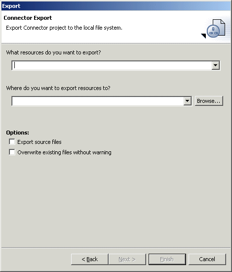

Export Set - RAR File The "Add Export Operation" wizard pages for the "RAR file" operation are identical to those one would find in the standard export wizard if one were starting a RAR file export manually. The only difference is that the "Finish" button is used to save the export operation rather than execute it immediately. An codepro.exportRARToFile Ant task is used to record the options chosen and perform the operation as part of an Export Set. |